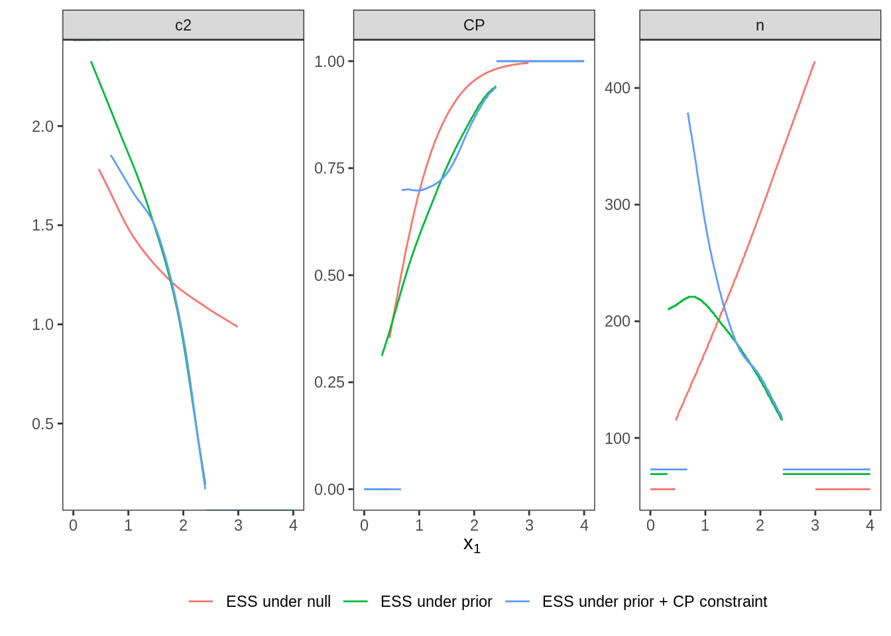

3 Scenario II: large effect, Gaussian prior
3.1 Details
In this scenario, we revisit the case from Scenario I, but are not assuming a point prior any more. Instead, a Gaussian prior with mean \(\vartheta = 0.4\) and variance \(\tau^2 = 0.2^2\) on the effect size is assumed, i.e. \(\delta \sim \mathcal{N} (0.4, 0.2^2)\).
In order to fulfill regulatory considerations, the type one error rate is still protected under the point prior \(\delta = 0\) at the level of significance \(\alpha = 0.025\).
The power constraint, however, needs to be modified. It is not senseful to compute the power as rejection probability under the full prior, because effect sizes less than a minimal clinically relevant effect do not show (sufficient) evidence againt the null hypothesis. Therefore, we assume a minimal clinically relevant effect size \(\delta = 0.0\) and condition the prior on values \(\delta > 0\) to compute expected power. In the following, the expected power should be at least \(0.8\).
# data distribution and priors
datadist <- Normal(two_armed = TRUE)
H_0 <- PointMassPrior(.0, 1)
prior <- ContinuousPrior(function(delta) dnorm(delta, mean = .4, sd = .2),
support = c(-5, 5),
tighten_support = TRUE)
# define constraints on type one error rate and expected power
alpha <- 0.025
min_epower <- 0.8
toer_cnstr <- Power(datadist, H_0) <= alpha
epow_cnstr <- Power(datadist, condition(prior, c(0.0, prior@support[2]))) >= min_epower3.2 Variant II-1: Minimizing Expected Sample Size under Point Prior
3.2.1 Objective
Expected sample size under the full prior is minimized, i.e., \(\boldsymbol{E}\big[n(\mathcal{D})\big]\).
3.2.2 Constraints
No additional constraints are considered in this variant.
3.2.3 Initial Design
For this example, the optimal one-stage, group-sequential, and generic
two-stage designs are computed.
While the initial design for the one-stage case is determined heuristically,
both the group sequential and the generic two-stage designs are
optimized starting from the a group-sequential design that is computed by
the rpact package to fulfill the type one error rate constraint and
that fulfills the power constraint at an effect size of \(\delta = 0.3\).
order <- 5L
# data frame of initial designs
tbl_designs <- tibble(
type = c("one-stage", "group-sequential", "two-stage"),
initial = list(
OneStageDesign(250, 2.0),
rpact_design(0.3, 0.025, 0.8, TRUE, order),
TwoStageDesign(rpact_design(0.3, 0.025, 0.8, TRUE, order))) )The order of integration is set to 5.
3.2.4 Optimization
For all these three initial designs, the resulting optimal designs are computed.
3.2.5 Test Cases
Firstly, it is checked that the maximum number of iterations was not reached in all these cases.
tbl_designs %>%
transmute(
type,
iterations = purrr::map_int(tbl_designs$optimal,
~.$nloptr_return$iterations) ) %>%
{print(.); .} %>%
{testthat::expect_true(all(.$iterations < opts$maxeval))}## # A tibble: 3 x 2
## type iterations
## <chr> <int>
## 1 one-stage 26
## 2 group-sequential 931
## 3 two-stage 1877Since type one error rate is defined under the point effect size \(\delta=0\), the type one error rate constraint can be tested for all three optimal designs.
tbl_designs %>%
transmute(
type,
toer = purrr::map(tbl_designs$optimal,
~sim_pr_reject(.[[1]], .0, datadist)$prob) ) %>%
unnest(., cols = c(toer)) %>%
{print(.); .} %>% {
testthat::expect_true(all(.$toer <= alpha * (1 + tol))) }## # A tibble: 3 x 2
## type toer
## <chr> <dbl>
## 1 one-stage 0.0251
## 2 group-sequential 0.0250
## 3 two-stage 0.0249Since the optimal two-stage design is more flexible than the optimal
group-sequential design (constant \(n_2\) function) and this is
more flexible than the optimal one-stage design (no second stage),
the expected sample sizes under the prior should be ordered in the opposite way.
Additionally, expected sample sizes under the null hypothesis
are computed both via evaluate() and simulation-based.
essh0 <- ExpectedSampleSize(datadist, H_0)
tbl_designs %>%
mutate(
ess = map_dbl(optimal,
~evaluate(ess, .$design) ),
essh0 = map_dbl(optimal,
~evaluate(essh0, .$design) ),
essh0_sim = map_dbl(optimal,
~sim_n(.$design, .0, datadist)$n ) ) %>%
{print(.); .} %>% {
# sim/evaluate same under null?
testthat::expect_equal(.$essh0, .$essh0_sim,
tolerance = tol_n,
scale = 1)
# monotonicity with respect to degrees of freedom
testthat::expect_true(all(diff(.$ess) < 0)) }## # A tibble: 3 x 6
## type initial optimal ess essh0 essh0_sim
## <chr> <list> <list> <dbl> <dbl> <dbl>
## 1 one-stage <OnStgDsg> <adptrOpR> 165 165 165
## 2 group-sequential <GrpSqntD> <adptrOpR> 117. 115. 115.
## 3 two-stage <TwStgDsg> <adptrOpR> 115. 119. 119.3.3 Variant II-2: Minimizing Expected Sample Size under Null Hypothesis
3.3.1 Objective
Expected sample size conditioned on negative effect sizes is minimized, i.e.,
3.3.2 Constraints
No additional constraints besides type one error rate and expected power are considered in this variant.
3.3.3 Initial Design
As in Variant I.2 another initial design is more appropriate
for optimization under the null hypothesis.
In this situation, one may expect a different (increasing) sample size function,
and thus also a different shape of the \(c_2\) function.
Therefore, the rpact initial design is a suboptimal starting point.
Instead, we start with a constant \(c_2\) function by heuristically
setting it to \(2\) on the continuation area.
Since optimization under the null hypothesis favours extremely conservative
boundaries for early efficacy stopping we impose as quite liberal upper bound
of \(3\) for early efficacy stopping.
3.3.4 Optimization
3.3.5 Test Cases
First of all, check if the optimization algorithm converged. To avoid improper solutions, it is first verified that the maximum number of iterations was not exceeded in any of the three cases.
testthat::expect_true(opt_neg$nloptr_return$iterations < opts$maxeval)
print(opt_neg$nloptr_return$iterations)## [1] 7604Again, the type one error rate under the point null hypothesis \(\delta = 0\) can be tested by simulation.
tbl_toer <- tibble(
toer = evaluate(Power(datadist, H_0), opt_neg$design),
toer_sim = sim_pr_reject(opt_neg$design, .0, datadist)$prob
)
print(tbl_toer)## # A tibble: 1 x 2
## toer toer_sim
## <dbl> <dbl>
## 1 0.0249 0.0250testthat::expect_true(tbl_toer$toer <= alpha * (1 + tol))
testthat::expect_true(tbl_toer$toer_sim <= alpha * (1 + tol))Furthermore, the expected sample size under the prior conditioned on negative effect sizes (\(\delta \leq 0\)) should be lower for the optimal design derived in this variant than for the optimal design from Variant II.1 where expected sample size under the full prior was minimized.
3.4 Variant II-3: Conditional Power Constraint
3.4.1 Objective
As in Variant II-1, expected sample size under the full prior is minimized.
3.4.2 Constraints
In addition to the constraints on type one error rate and expected power, a constraint on conditional power to be larger than \(0.7\) is included.
3.4.3 Initial Design
The previous initial design can still be applied.
3.4.4 Optimization
3.4.5 Test Cases
We start checking whether the maximum number of iterations was not reached.
## [1] 1842The type one error rate is tested via simulation and compared
to the value obtained by evaluate().
tbl_toer <- tibble(
toer = evaluate(Power(datadist, H_0), opt_cp$design),
toer_sim = sim_pr_reject(opt_cp$design, .0, datadist)$prob
)
print(tbl_toer)## # A tibble: 1 x 2
## toer toer_sim
## <dbl> <dbl>
## 1 0.0250 0.0250testthat::expect_true(tbl_toer$toer <= alpha * (1 + tol))
testthat::expect_true(tbl_toer$toer_sim <= alpha * (1 + tol))The conditional power is evaluated via numerical integration on several points inside the continuation region and it is tested whether the constraint is fulfilled on all these points.
tibble(
x1 = seq(opt_cp$design@c1f, opt_cp$design@c1e, length.out = 25),
cp = map_dbl(x1, ~evaluate(cp, opt_cp$design, .)) ) %>%
{print(.); .} %>% {
testthat::expect_true(all(.$cp >= 0.7 * (1 - tol))) }## # A tibble: 25 x 2
## x1 cp
## <dbl> <dbl>
## 1 0.675 0.698
## 2 0.747 0.700
## 3 0.819 0.700
## 4 0.891 0.699
## 5 0.963 0.698
## 6 1.03 0.698
## 7 1.11 0.701
## 8 1.18 0.705
## 9 1.25 0.709
## 10 1.32 0.715
## # … with 15 more rowsDue to the additional constraint in comparison to Variant II.1, Variant II.3 should show a larger expected sample size under the prior than Variant II.1
3.5 Plot Two-Stage Designs
The optimal two-stage designs stemming from the different variants are plotted together.
